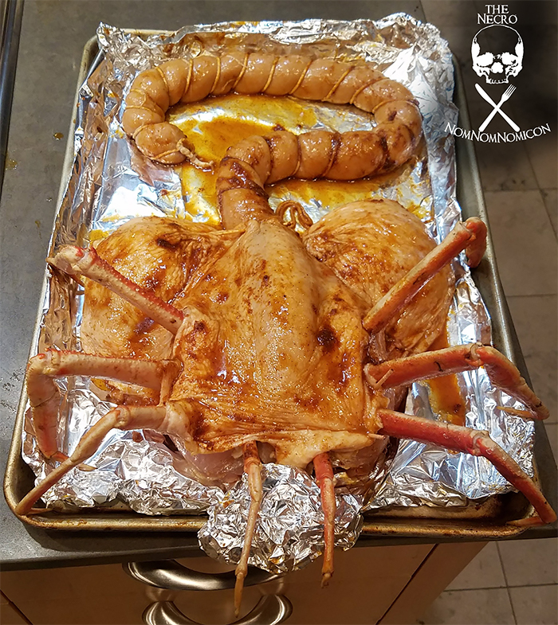

Home
Facehugger

For fans of Ridley Scott’s Alien facing a holiday at home alone this year, there’s no better time to try a recipe that might not
be so at home during a traditional family get-together this holiday season. While the roasted chicken is a fairly traditional
choice for Christmas and other winter holidays, why not put a xenomorph-style spin on the old classic?
Ingredents
- 1 whole chicken
- Desired spice rub & glaze
- 3 feet of sausage casing
- Butcher’s twine
- 1 additional boneless chicken breast
- 1/4 cup chicken broth
- 0.5 oz (roughly 1/2 teaspoon) transglutaminase powder
- 8 crab legs, 4 left and 4 right (precooked)
Steps
- Spatchcock the chicken.
- Remove the wings and legs, leaving the breasts and thighs intact with the skeleton of the bird.
- Flip the bird over, breast side up, and carefully remove the wings
- Press the bird flat into the board, placing gentle pressure on breasts with the palm of your hands. There will be some crunches.
- To create the tail combine the additional boneless chicken breast and transglutaminase powder in the bowl of a food processor along with whatever spices are being used on the chicken.
- Stuff the sausage casing.
- Add the tail to the chicken
- Place your creation into a 350℉ (175℃) oven for forty minutes.
- Add the crab legs
- Enjoy!